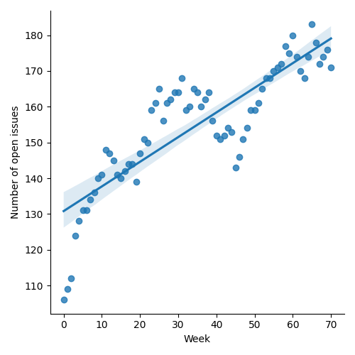
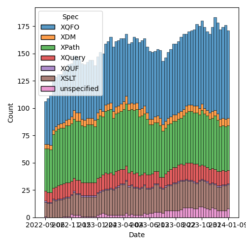
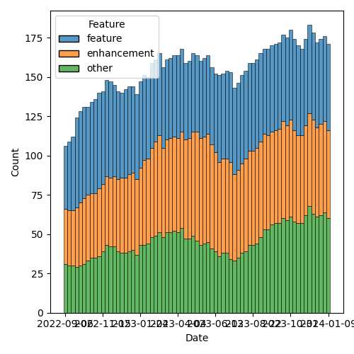

QT4 CG Meeting 061 Minutes 2024-01-16
Table of Contents
- Draft Minutes
- Summary of new and continuing actions
[0/4] - 1. Administrivia
- 2. Technical Agenda
- 3. Any other business?
- 4. Adjourned
Meeting index / QT4CG.org / Dashboard / GH Issues / GH Pull Requests
Draft Minutes
Summary of new and continuing actions [0/4]
[ ]QT4CG-052-02: NW to consider how to schedule an “editor’s meeting”[ ]QT4CG-056-04: MK to write a proposal for adding a select attribute to xsl:text[ ]QT4CG-058-02: MK to consider providing more advice about the pitfalls of mixing decimal and double when sorting[ ]QT4CG-061-01: MK to review the comments CG made on the PR #927.- NW to merge PR #927 after MK review
1. Administrivia
1.1. Roll call [8/11]
Regrets: MSM, JK.
[X]Reece Dunn (RD)[X]Sasha Firsov (SF)[X]Christian Grün (CG)[ ]Joel Kalvesmaki (JK)[X]Michael Kay (MK)[X]John Lumley (JL)[X]Dimitre Novatchev (DN)[X]Wendell Piez (WP) [:10-][ ]Ed Porter (EP)[ ]C. M. Sperberg-McQueen (MSM)[X]Norm Tovey-Walsh (NW). Scribe. Chair.
1.2. Accept the agenda
Proposal: Accept the agenda.
Accepted.
1.2.1. Status so far…

Figure 1: “Burn down” chart on open issues

Figure 2: Open issues by specification

Figure 3: Open issues by type
1.3. Approve minutes of the previous meeting
Proposal: Accept the minutes of the previous meeting.
Accepted.
1.4. Next meeting
The next meeting is scheduled for Tuesday, 23 January 2024.
Any regrets for the next meeting? MSM.
1.5. Review of open action items [7/10]
[ ]QT4CG-052-02: NW to consider how to schedule an “editor’s meeting”[X]QT4CG-052-06: MK to consider the editorial question of “promotion” for the symmetric relations.[X]QT4CG-055-01: MK to clarify that the return type of the deep lookup operator is a flat sequence.[ ]QT4CG-056-04: MK to write a proposal for adding a select attribute to xsl:text[X]QT4CG-058-01: MK to clarify infn:numeric-comparethat -0 and +0 are equal.[ ]QT4CG-058-02: MK to consider providing more advice about the pitfalls of mixing decimal and double when sorting[X]QT4CG-060-01: NW to describe why we’re closing #899 without change[X]QT4CG-060-02: MK to sketch out a proposal withsubsequenceandsubsequence-where.[X]QT4CG-060-03: MK to review PR and if there are no concerns, merge it without discussion next weeks[X]QT4CG-060-04: CG to make a PR to removenumeric-compareand consider other functions
1.6. Review of open pull requests and issues
1.6.1. Blocked
1.6.2. Merge without discussion
The following PRs are editorial, small, or otherwise appeared to be uncontroversial when the agenda was prepared. The chairs propose that these can be merged without discussion. If you think discussion is necessary, please say so.
- PR #947: Reorganise F+O chapter 15 [editorial]
- PR #942: 530 Fix typo, escape-solidus not escape-uri-attributes
- PR #933: 930 drop obsolete note about comments and PIs
- PR #932: 931 Add rules for duration precision
- PR #737: 295: Boost the capability of recursive record types
- PR #928: Minor edits through ch. 15
Proposal: merge without discussion?
Accepted.
(MK notes that we may have merge conflicts; NW to do 928 last.)
1.6.3. XSLT focused
The following PRs appear to be candidates for a future XSLT-focused meeting.
- PR #871: Action qt4 cg 027 01 next match
These issues identify the XSLT-focused changes that have been made to the specifications but which have not been established by the community group as the status quo.
- Issue #168: XSLT Extension Instructions invoking Named Templates
1.6.4. Substantive PRs
The following substantive PRs were open when this agenda was prepared.
- PR #943: 187 Add FLWOR expression while clause
- PR #941: 939 Remove fn:numeric-compare
- PR #940: 878 Add subsequence-where function
- PR #937: 779 hash function
- PR #936: 877 revised rules for op:binary-less-than
- PR #927: 861 Rewrite spec of deep lookup operator
- PR #921: 920 Allow xsl:break and xsl:next-iteration within branch of xsl:switch
- PR #916: 720 Allow methods in maps with access to $this
- PR #880: 872 Symmetry: fn:items-at → fn:get
- PR #874: 878 Proposed extension to subsequence
- PR #832: 77 Add map:deep-update and array:deep-update
1.6.5. Proposed for V4.0
The following issues are labled “proposed for V4.0”.
- Issue #938: Canonical serialization
- Issue #937: 779 hash function
- Issue #910: Introduce a Kollection object with functions that operate on all types of items that can be containers of unlimited number of "members"
- Issue #908: Function identity: documentation still too vague
- Issue #850: fn:parse-html: Finalization
- Issue #829: fn:boolean: EBV support for more item types
- Issue #716: Generators in XPath
- Issue #689: fn:stack-trace: keep, drop, replace with $err:stack-trace ?
- Issue #583: array:replace(), etc
- Issue #557: fn:unparsed-binary: accessing and manipulating binary types
- Issue #340: fn:format-number: Specifying decimal format
- Issue #283: Enumeration types
- Issue #260: array:index-of
- Issue #236: map:group-by or map:build with a sequence of keys
- Issue #33: json parsing number type option
- Issue #31: Extend FLWOR expressions to maps
2. Technical Agenda
2.1. PR #927: 861 Rewrite spec of deep lookup operator
See PR #927
MK summarizes.
- MK: This is a rewrite without any intentional changes. It defines
things a bit more precisely in response to edge cases raised in the
issue.
- … MK describes the new exposition …
- JL: There’s no attempt to say where something was.
- MK: No. I’m still thinking about how to do that, but it isn’t in this proposal.
- DN: This is intended only for maps or for maps and arrays?
- MK: It works for both.
- DN: Nothing is said about the order of the results. Sequences are ordered.
- MK: It’s implicit in the logic in the definition of
immediate-contentand it’s covered in the notes that say that the operator retains order in sequences and arrays.
Proposal: accept this PR.
- CG: I gave some comments that I’d like to see incorporated. Mostly editorial.
ACTION QT4CG-061-01: MK to review the comments CG made on the PR #927.
NW to merge after MK reviews the comments.
2.2. PR #916: 720 Allow methods in maps with access to $this
See PR #916
MK expects discussion and feedback; writing the spec was an opportunity to encourage discussion.
- MK: The essential aim here is to define functions that can have
access to the records they’re defined on.
- … Defines the term
methodwhich is a familiar term used in perhaps an unfamiliar way. - … It’s like a method in Javascript, sort of, but we don’t have classes or prototypes.
- … A function annotated
%methodhas access to an extra variable$thiswhich refers to the map that it’s part of. - … The key difficulty in making this work is “when do you bind ~$this~”?
- … If you update a record, you don’t want the function to point to the old map.
- … This PR does this by binding
$thisat the moment of execution. - … Should this be a function of the lookup operator or
map:get()? - … I decided to make it binding the variable only a consequence of the lookup operator.
- … Defines the term
- JL: My original question was going to be about what happens if you
have a variable called
$this? You’d have to bind it to another name.- … When you say not using
map:get()does that preclude dynamic lookup?
- … When you say not using
- MK: No, because the lookup operator can be an expression.
- DN: I think this is a good direction. But I have questions. It’s
possible to annotate a function as a
%methodwhen it isn’t in a map. What if a function is called from a context outside the map? And maybe the issues related to updating the map could be solved differently. If we say that we have acall()function that we apply on the map. Then the implementation ofcall(), passed a map, can bind$this$. We say that functions that are members of maps can only be called that way. - MK: On the point of using
%methodon functions outside of maps, that’s what the distinction betweendormantandactiveis about. - MK: I think the other suggestion is to use a different operator than
?for the magic semantics. The problem is a lack of symbols. I think most users won’t think twice about the fact that there’s magic going on here. Using a familar symbol in an intuitive way is better even if they don’t understand the subtlties. - DN: It is more than that. The special
callfunction can only be called on a map and it knows how to prepare the function. - MK: The problem is finding a syntax that works in a way users will appreciate. It should work like a sequence of method calls in other languages.
- DN: I’m asking the same question: I think the
callfunction eliminates the update problems. Using a fat arrow operator with call would make everything work. - MK: It still has the characteristic that you bind
$thisat the point where you call the function.
Some discussion of having more complex examples.
- JL: Suppose we added
translate,rotateetc on those methods (likeresize). You could chain them all the way down. I think what DN is saying is that I can do that with ~=>and acallfunction. So you get the same sense, but it’s through thick arrows and a call at each stage. - RD: That’s similar to how
$selfworks in Python. - CG: I’ve already given a lot of feedback on the PR itself. I share
the concern that we shouldn’t treat the lookup operator and
map:getdifferently. We might want to make them the same after compilation and we have lots of users that don’t use the lookup operator.- … More generally, I have some concerns that we’re trying to simulate objects, but if we went a little further we could have more power and performance by having something more like objects.
- … Objects at their core are very simple; maps are a lot more powerful, but much of that power isn’t needed for objects. What we need for objects is not much. And we could think about inheritance and other features.
- MK: Trying to do things one step time; JS combines maps and objects.
- DN: I think what CG says makes perfect sense. We could just use functions with a special argument and use them with the fat arrow. If you don’t use the right first argument, you’ll get an error.
- MK: Yes, I think I understand. I’ll explore that further.
- RD: One thing that JS JIT compilers do is optimizations on the types. They have a similar issue where the content of the map or object can change at any time. They keep track of the different shapes that the object has.
- MK: Data flow analysis in effect.
- RD: An XQuery or XPath processor could do similar sorts of things to produce more concrete representations of these class-like maps.
- CG: Yes, that’s a good point.
- … If you have a map:put function and the value can be dynamic, it’s difficult to find out if the result will be compliant with the existing record. In those cases, if you had a fixed record constructor…
- MK: Yes. I am thinking of introducing a fixed record constructor, but I think that’s orthogonal and complementary.
- CG: And we could have final methods that can’t be removed.
- … And I wonder if
$thiscould be explicitly available in a record constructor to avoid having to have the%methodannotation.
- … And I wonder if
- RD: Also, it would be useful to see if we can extend this to things that aren’t maps. It’s quite common to have a whole set of functions that have the first argument as the object to be operated on.
- MK: The problem with
call()approach is that the function lookup in the=>is in the global namespace. You get no function overloading. - RD: You can have a user object for example and pass that as arguments to add, remove, change, etc. That produces a class-like thing.
- MK: I’m not sure where you’re heading.
- RD: I’m just saying that pattern is common outside of maps. I wonder if we could extend it.
JL wonders if using the => operator would mean having to repeat the
map several times, once for lookup and again for access.
- MK: Yes, the fat arrow followed by something that looks like a function does global lookup.
- JL: Couldn’t we use something like a variable on the right hand side?
- MK: Yes, and where do you bind that?
- JL: I think DN’s proposal for
callis to pass the map and the function as two arguments, then you know which function to call. So the map has to appear twice. - DN: The discussion so far has convinced me that what RD proposed is
the best solution. We don’t need anything to be related to maps at
all; they’re just functions that have a special first argument
called
$self. They can be applied to anything with the=>. - MK: Are they global functions?
- DN: They could be global or they could be dynamic. It doesn’t matter.
- … What ever is on the left hand side of the arrow is subsituted for the
self.
- … What ever is on the left hand side of the arrow is subsituted for the
- MK: How do you provide a resize function for rectangles and circles without putting them all in the same global namespace?
MK will give some thought to how to solve the global namespace problem.
2.3. PR #832: 77 Add map:deep-update and array:deep-update
See PR #832
MK summarizes the changes in the PR.
- MK: There’s an effort here to make the operation intuitive, but that
means there’s a lot of detail to make that work.
- … MK reviews some of the examples …
- MK: The mechanism to make that work is complex. It relies on
defining properties of items as notations.
- … MK walks through the description of the conceptual operation …
- … The magic properties are used purely internally. But the semantics are defined in terms of a temporary data model that does things that the publicly exposed data model doesn’t support.
- JL: These are arbitrary replacements, so you could have finds that are deep down but their parents are removed later.
- MK: Yes, you might update something that’s a waste of time because it’s parent has disappeared. It’s well defined, even if it allows users to do things that are useless.
- JL: In the change function, do I know both the value and the effective key?
- MK: There’s a question of whether you make the attached properties visible. Clearly one could.
- MK: If the properties are annotations, you can use the existing functions to get the annotations.
- CG: I’ve given a lot of feedback. My main concerns are still the same.
- … The implicit binding of data that isn’t visible to the user is problematic. In XQuery Update we had a scoring value that worked this way. We dropped it eventually because we were never happy with it. You couldn’t tell what was going on internally.
- … I’d be much happier with a mechnism that passed a map describing what things should be changed.
- MK: Yes. I tried to avoid doing this with a sort of mini-selector language. I didn’t want to define another little language that we have for selectors that can only be used in this. I’d like to avoid that.
- RD: MarkLogic does a similar thing. Some of the APIs take a subset of an XPath expression and use that not as a selection but as a mechanism for applying it. In effect, that isn’t really a new language, it’s just a restriction on what constructs of XPath you can have.
- MK: That voilates orthogonality which I’d like to avoid.
MK proposes to develop some of the things that are complimentary to it and see how we get on.
- MK: I do think we need to address some hard issues with map and array transformations, JSON transformations. One of the ways of doing that might be to develop use cases that are high-level that show how lots of different facilities work together to solve an application level problem.
3. Any other business?
None heard.